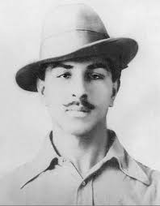

Key Figures
Leaders who shaped India's freedom struggle
India's freedom struggle was led by numerous remarkable individuals who dedicated their lives to the cause of independence. Many leaders emerged throughout the different phases of the movement, each contributing unique strategies and philosophies to the fight against colonial rule.
Mahatma Gandhi (1869-1948)
Leader of the Indian independence movement against British rule, advocating for non-violent civil disobedience. His methods inspired movements for civil rights and freedom across the world.
"Be the change that you wish to see in the world."

Jawaharlal Nehru (1889-1964)
A central figure in Indian politics before and after independence. Became the first Prime Minister of independent India and was instrumental in shaping modern India's identity.
"A moment comes, which comes but rarely in history, when we step out from the old to the new, when an age ends, and when the soul of a nation, long suppressed, finds utterance."

Subhas Chandra Bose (1897-1945)
Advocated for complete independence and formed the Indian National Army to fight against British rule during World War II. Known by the honorific "Netaji" (respected leader), he sought international support for India's freedom.
"Give me blood, and I shall give you freedom!"

Bhagat Singh (1907-1931)
A revolutionary freedom fighter who was executed at the age of 23. His legacy continues to inspire youth across India. He advocated for socialism and the complete independence of India from British rule.
After throwing non-lethal bombs in the Central Legislative Assembly in Delhi as a protest against colonial policies, Bhagat Singh was arrested and subsequently hanged. His martyrdom made him a folk hero of the independence movement.
Sardar Vallabhbhai Patel (1875-1950)
Known as the "Iron Man of India," Patel was instrumental in uniting the 565 princely states into the Indian Union after independence. He served as the first Deputy Prime Minister of India.
"My only desire is that India should be a good producer and no one should be hungry, shedding tears for food in the country."
Rani Lakshmibai (1828-1858)
The Queen of Jhansi who became a leading figure in the 1857 rebellion, fighting against British forces until her death in battle. Her courage and leadership skills made her a legendary figure in Indian history.
"I shall not surrender my Jhansi."